星空油畫教學：從黑夜打底到星塵堆疊，一幅只屬於自己的星空
在所有繪畫主題裡，星空算是容錯率很高的一種，前面大概八成的過程其實都看不太出來在畫什麼，很多同學畫到一半都會懷疑自己是不是畫壞了，但只要撐到最後，把星星灑上去的那一刻，整張畫瞬間被點亮，前後的落差感特別大，也是這個主題最有成就感的地方。
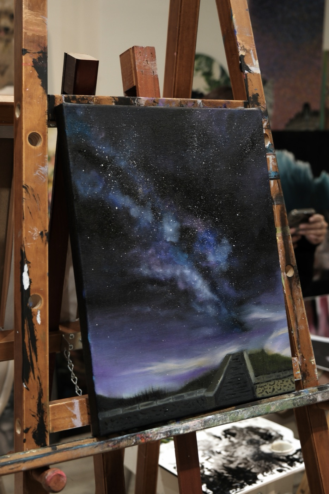
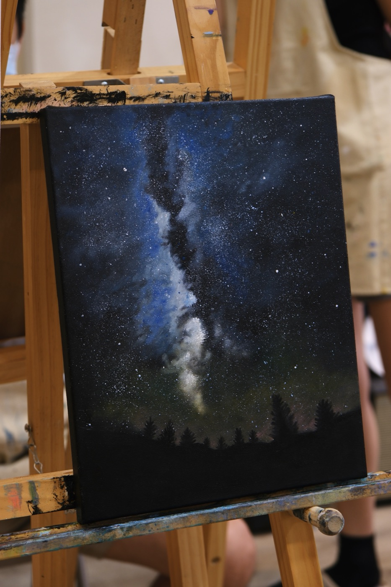
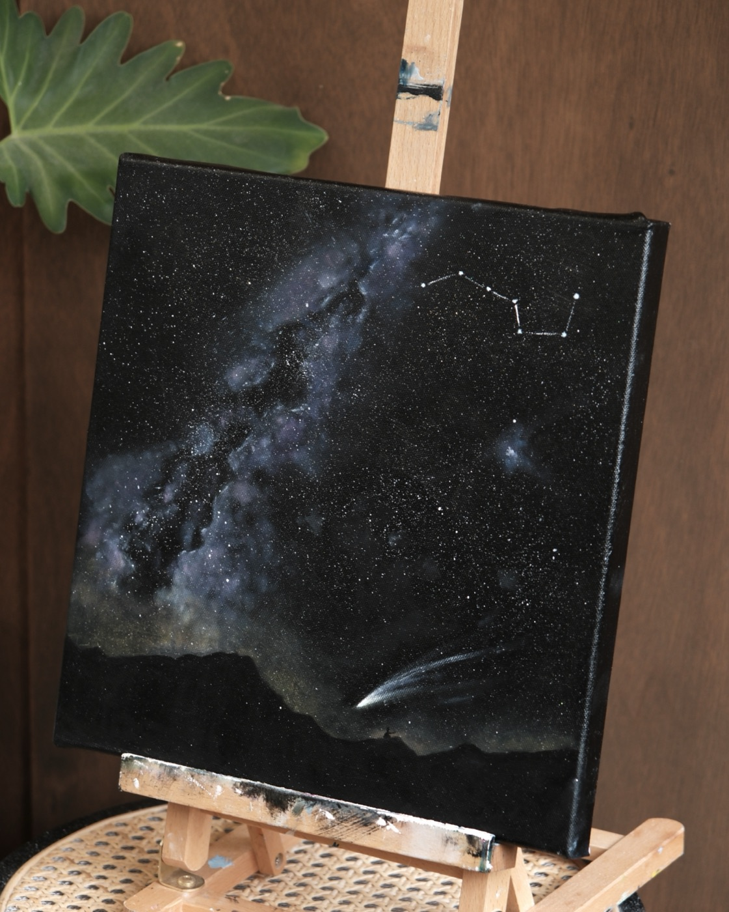
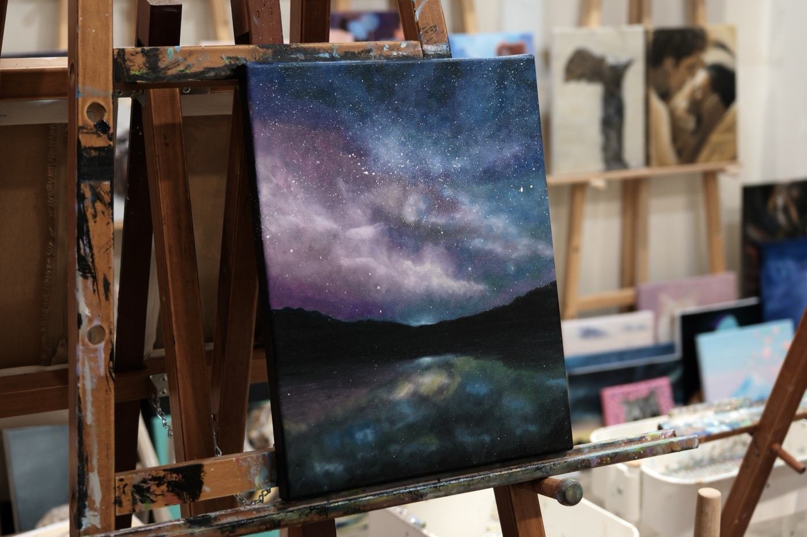
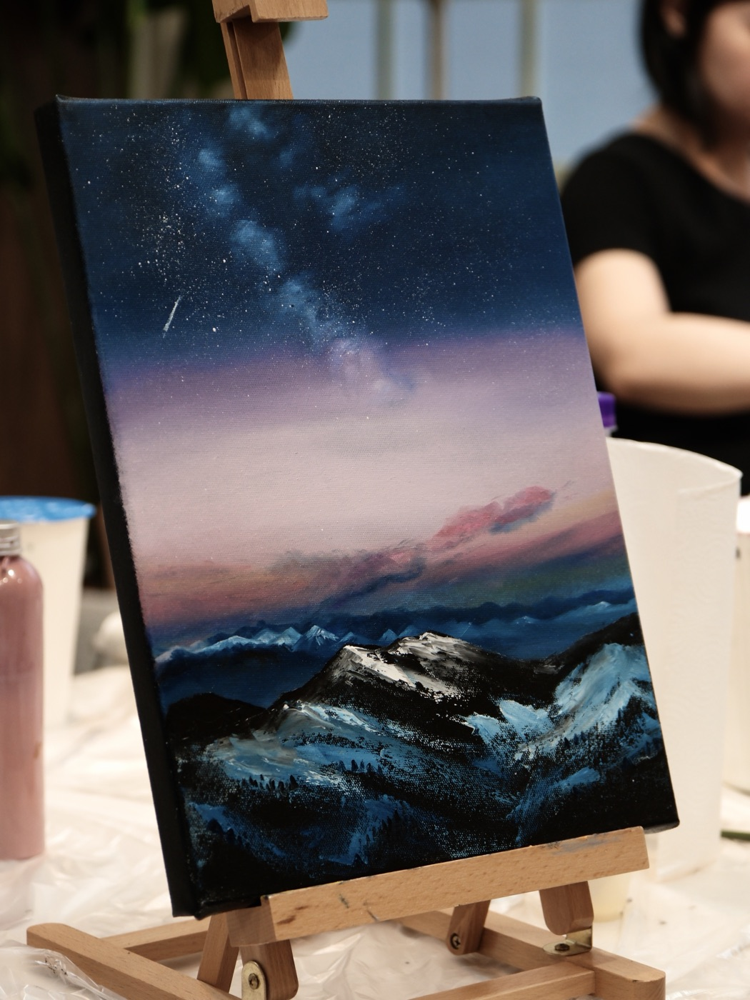
撐過前面看不懂在畫什麼的八成
畫星空的過程中，我們常跟學生說：「是不是完全不知道自己在幹嘛？沒關係，這很正常，等等完成就會差很多了。」大家也真的都是一路懷疑到最後，直到灑星星的瞬間，才發現自己滿會畫的，拍照拍得超開心。也因為前面「畫錯」的機率偏低，星空是一個非常適合所有人挑戰的主題。
步驟不複雜：打底、堆疊、灑星塵
星空油畫的步驟其實不複雜，先鋪一層黑色打底，再依照參考圖，慢慢把銀河的顏色、星塵的位置堆疊出來，最後點上星星，有些同學還會另外灑一些亮粉，讓畫面的細節和層次感更豐富。這個把回憶變成全新體驗的過程，也是星空畫最特別的地方。
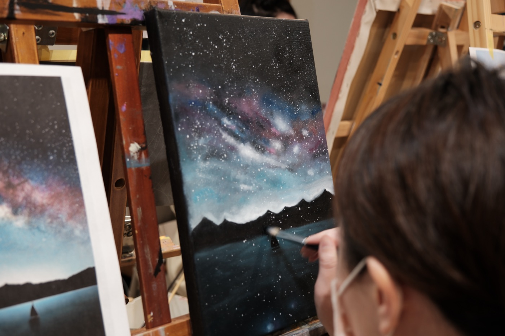
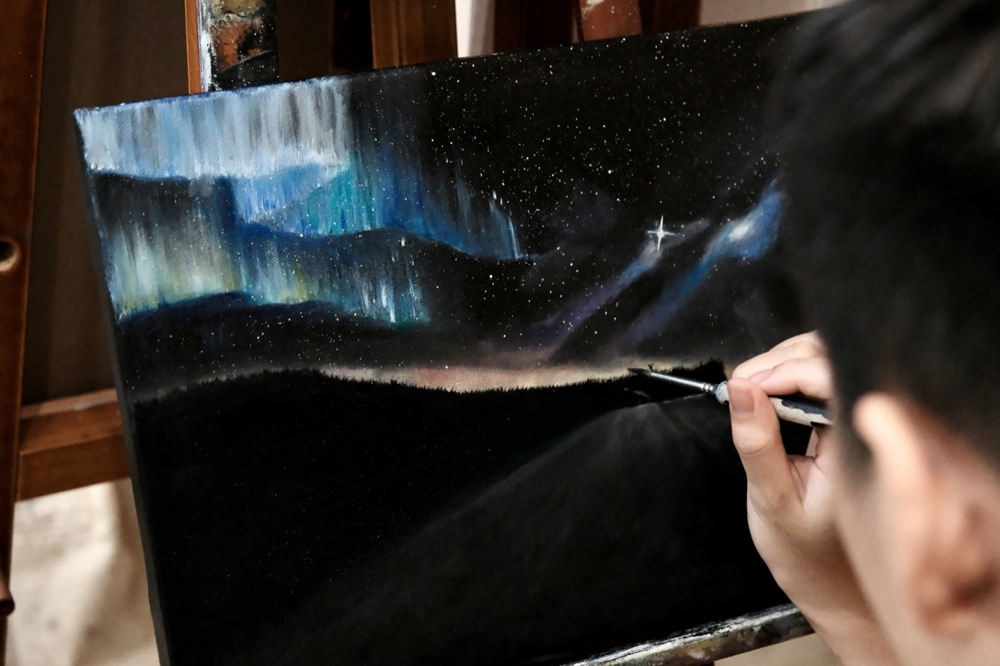
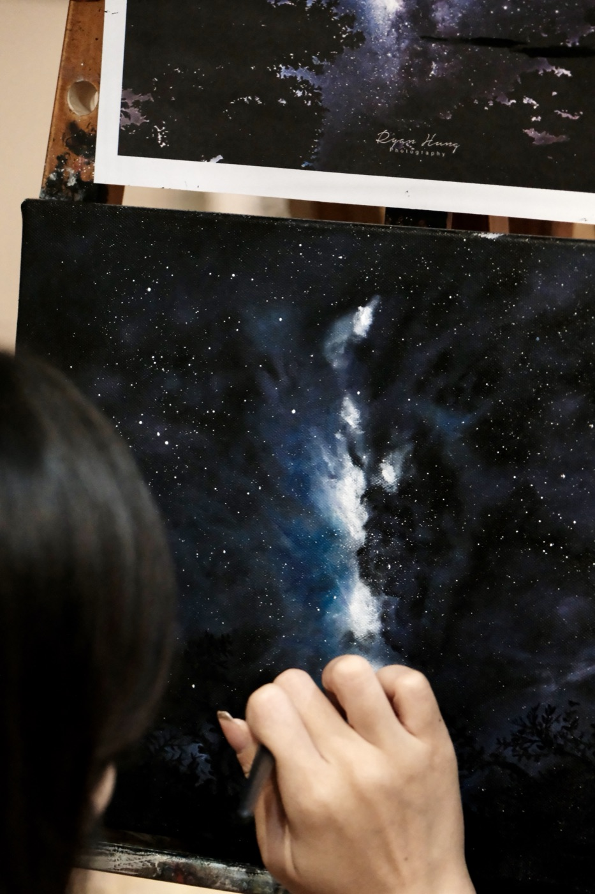
看似容錯率高，其實藏著技術門檻的一關：上色
畫星空之前，要先在畫布上打一層黑色壓克力顏料，吹乾後，才疊上油畫顏料作畫。但因為底層是深色的，上層比較鮮豔的油畫顏料很難一次完全蓋過黑色底，為了維持那個極致的深邃黑，多少得犧牲一點顏色的飽和度與鮮豔度，不過也因為這樣的高對比，畫面反而更抓眼球，深黑的底襯托出銀河與星點的光，視覺上非常搶眼。
所以星空畫雖然怎麼畫都不太會難看，但除了打底，要畫得通透、顏色不髒，也是課程的重點之一，需要透過不同顏色的薄薄堆疊，才能把顏色的層次慢慢堆疊上去，做出有遠近感的星星、不同顏色的星塵、銀河、星球等效果，這些都跟顏料的調配與筆刷的運用息息相關。
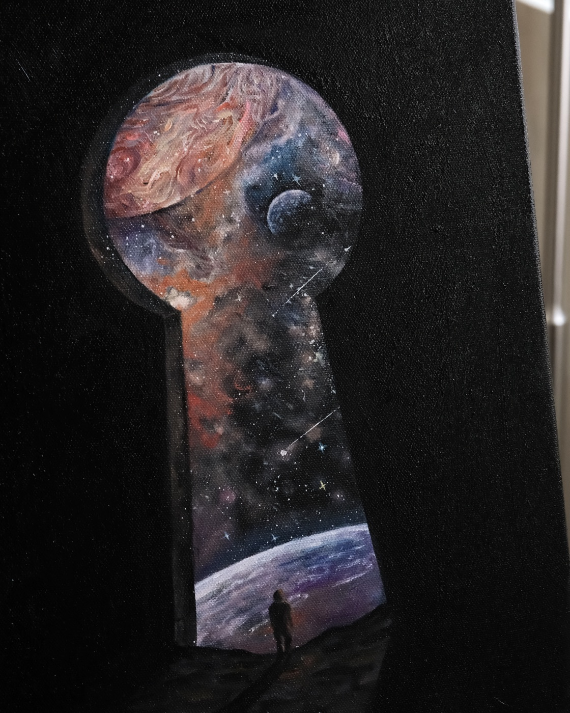
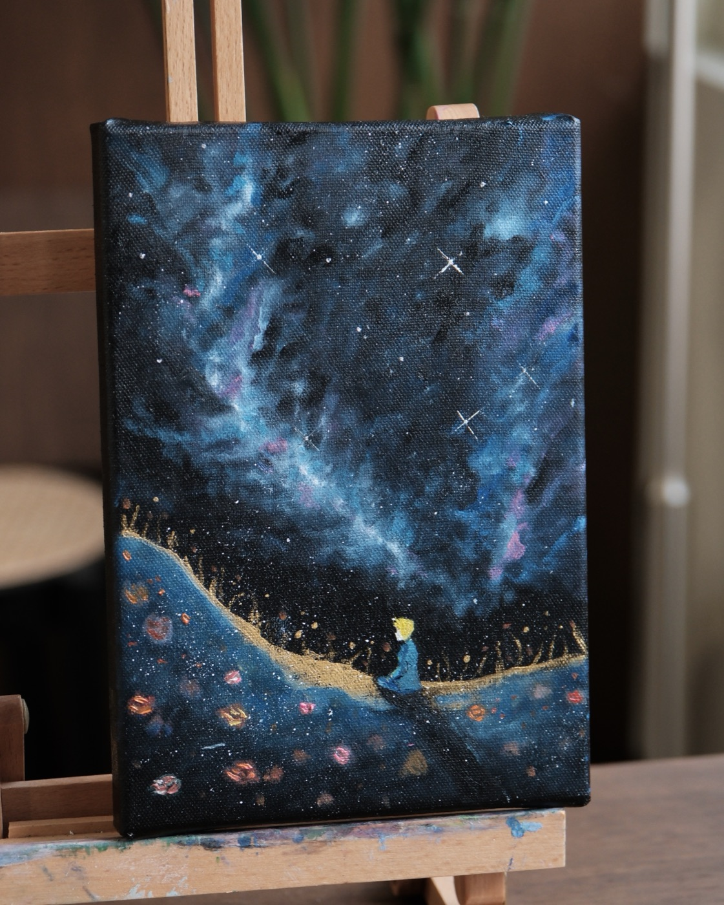
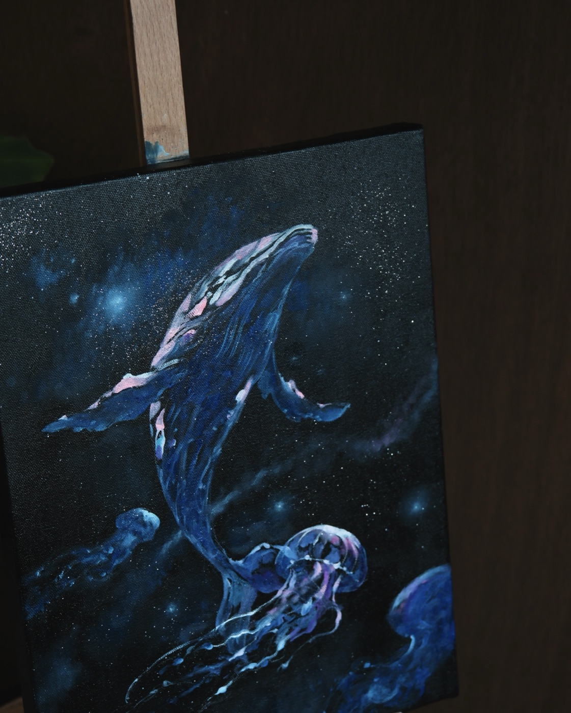
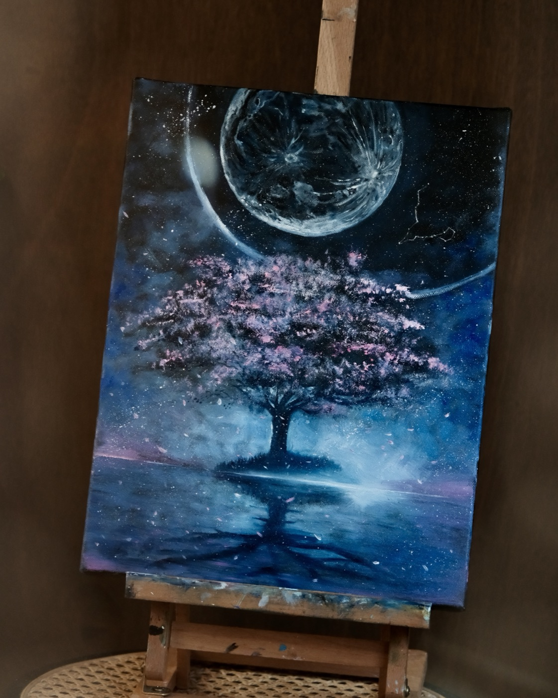
星空不只是銀河，也能是自己的回憶
很多同學帶來的參考圖，除了寫實的銀河山景，也會加入自己想像的畫面，像是童話角色、海洋生物、花樹倒影，或是某個抽象的構圖，星空當背景反而更能襯托這些主題，變成一幅只屬於自己的故事。